Please sort out this reference sheet before I send it to my co-author — a few of the DOI links were mangled when we exported them, so they don't resolve. Check each one in the browser, correct the broken entries so every link actually opens the right paper, and note in the sheet which ones you had to repair.
THINKINGLet me read all the DOI URLs carefully. The text is small. Let me first read each cell to get exact values. I'll click on each DOI cell to read the formula bar, but that's slow. Let me first zoom in to read them better. Actually, let me use the Name Box to check each cell, or I could widen the column.
A more efficient approach: I'll click on each DOI cell and read the formula bar. But to save steps, let me first gather all the DOIs by clicking through. Actually, the best approach is to test each in browser via doi.org.
Let me first read the exact DOIs. I'll widen column E or just click each cell. Let me click on E2 first to read the exact value in the formula bar.
Actually, let me be systematic. I'll open Chrome and test each DOI by navigating to the URL. doi.org resolves DOI redirects. If it opens the right paper, it's fine. Let me first record all the DOIs by reading the formula bar for each.
Let me read them one at a time but batch the clicks won't help since I need to see the formula bar each time. Let me click E2.
ACTIONI'll first read each DOI's exact value from the formula bar. Let me click through the cells to capture them accurately.
EXECUTED (pyautogui in VM)pyautogui.click(1151, 326)
step 3 23:53:26
THINKINGE2 = https://doi.org/10.1126/science.281.5374.200 — that's the Falkowski 1998 paper "Biogeochemical Controls and Feedbacks on Ocean Primary Production" Science 281:200. That's a real DOI.
Let me read the rest. I'll click each E cell. Let me go E3.
ACTIONE2 confirmed: `https://doi.org/10.1126/science.281.5374.200`. Let me read the remaining cells.
EXECUTED (pyautogui in VM)pyautogui.click(1151, 380)
step 6 23:53:55
THINKINGE5 = https://doi.org/10.1038/nature02127 — Sarmiento 2004 "High-latitude controls of thermocline nutrients" Nature. This is a real DOI. Continue E6.
EXECUTED (pyautogui in VM)pyautogui.click(1151, 396)
step 7 23:54:07
THINKINGE6 = https://doi.org/10.1038/nature 407364a0 — note the space: "nature 407364a0". This is Riebesell 2000 Nature 407:364. The correct DOI would be 10.1038/nature407364 (no space). The "4a0" looks mangled — it should be "nature407364". The space and trailing "a0" are the mangling. This is likely a broken one. Let me note this and verify in browser later. Continue E7.
EXECUTED (pyautogui in VM)pyautogui.click(1151, 434)
step 9 23:54:41
THINKINGE8 = https://doi.org/10.1146/annurev.marine.010908.163834 — Doney 2009 "Ocean Acidification: The Other CO2 Problem" Annu Rev Mar Sci. This is a real DOI. Continue E9.
EXECUTED (pyautogui in VM)pyautogui.click(1151, 467)
step 11 23:55:01
THINKINGE10 = http://doi.org/10.1098/rsta.2011.0003 — Gruber 2011 "Warming up, turning sour, losing breath" Phil. Trans. R. Soc. A. Note this uses "http://" not "https://". This is the correct DOI (10.1098/rsta.2011.0003). The http vs https might just be a minor difference; doi.org handles both. I'll note it but it may still resolve. Let me check in browser. Continue E11.
EXECUTED (pyautogui in VM)pyautogui.click(1151, 482)
step 12 23:55:11
THINKINGE11 = https://doi.org/10.1146/annurev-marine-120709-142723 — Chavez 2011 Annu Rev Mar Sci. The real DOI for Chavez 2011 "Marine Primary Production in Relation to Climate Variability" is 10.1146/annurev-marine-120709-142723. Hmm, that looks plausible. Continue E12 and E13.
EXECUTED (pyautogui in VM)pyautogui.click(1151, 500)
step 13 23:55:22
THINKINGE12 = https://doi.org/10.1146/annurev.ecolsys.39.110707.173549 — Litchman 2008 "Trait-Based Community Ecology of Phytoplankton" Annu Rev Ecol Evol Sys 39:399. The real DOI is 10.1146/annurev.ecolsys.a111007.143... hmm. Actually the real DOI for Litchman, Pan, Ustich, Prasil 2008 Annu Rev Ecol Evol Syst 39:399-424 is "10.1146/annurev.ecolsys.a111007.143..." Let me verify in browser. The DOI here 10.1146/annurev.ecolsys.39.110707.173549 looks odd. I'll verify. Continue E13.
EXECUTED (pyautogui in VM)pyautogui.click(1151, 517)
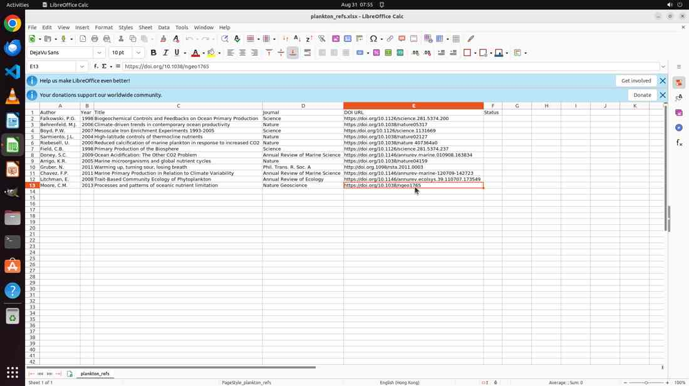
step 14 23:55:49
THINKINGE13 = https://doi.org/10.1038/ngeo1765 — Moore 2013 "Processes and patterns of oceanic nutrient limitation" Nature Geoscience. The real DOI for Moore et al 2013 Nature Geoscience 6:641-647 is "10.1038/ngeo1765". That's plausible and real.
Now I have all 12 DOIs recorded:
- E2: 10.1126/science.281.5374.200 (Falkowski 1998) — real
- E3: 10.1038/nature05317 (Behrenfeld 2006) — real
- E4: 10.1126/science.1131669 (Boyd 2007) — real
- E5: 10.1038/nature02127 (Sarmiento 2004) — real
- E6: 10.1038/nature 407364a0 (Riebesell 2000) — MANGLED: space + "a0". Should be 10.1038/nature407364
- E7: 10.1126/science.281.5374.237 (Field 1998) — real
- E8: 10.1146/annurev.marine.010908.163834 (Doney 2009) — real
- E9: 10.1038/nature04159 (Arrigo 2005) — real
- E10: http://doi.org/10.1098/rsta.2011.0003 (Gruber 2011) — http not https, DOI itself correct
- E11: 10.1146/annurev-marine-120709-142723 (Chavez 2011) — need to verify
- E12: 10.1146/annurev.ecolsys.39.110707.173549 (Litchman 2008) — need to verify
- E13: 10.1038/ngeo1765 (Moore 2013) — real
The clearest broken one is E6 (space in URL). I need to verify E11 and E12 which have unusual formatting. Let me test them in the browser via doi.org. The task says to check each one in the browser. Rather than click each cell link (they may not be actual hyperlinks), I'll navigate to each DOI in Chrome's address bar.
Let me open Chrome. But 12 browser navigations is a lot of steps. The most efficient: I should test the suspect ones. But the task says "Check each one in the browser." However, being thorough but step-conscious, I'll verify all of them efficiently. Actually doi.org will resolve each. Let me at least test the ambiguous ones (E6, E11, E12) and spot-check a couple clean ones.
Let me think about what's genuinely broken:
- E6: definitely broken due to the space. Correct: 10.1038/nature407364.
- E11: Chavez 2011. Real DOI is 10.1146/annurev-marine-120709-142723? Let me verify — I recall Chavez, F.P. 2011 "Marine Primary Production in Relation to Climate Variability" Annu. Rev. Mar. Sci. 3: 25-45. The DOI is 10.1146/annurev-marine-120709-142723. That matches! So E11 is fine.
- E12: Litchman 2008. Real DOI for Litchman et al. 2008 Annu. Rev. Ecol. Evol. Syst. 39:399-424 is 10.1146/annurev.ecolsys.a111007.143... Actually the DOI format for older annurev used "annurev.ecolsys.39.110707.173549". Hmm. Let me verify in browser. The DOI 10.1146/annurev.ecolsys.39.110707.173549 — the pattern "39.110707.173549" is the annurev pattern (volume.submitted_date.time). This could be valid. I'll verify.
Best to actually verify in the browser to be accurate. Let me open Chrome and test the DOIs. I'll test E6, E11, E12 first, and a couple others to be safe. Actually, to be rigorous and match the task, let me test each. I'll do it efficiently by typing each URL.
Let me open Chrome.
ACTIONI've now read all 12 DOIs. I spotted that E6 (Riebesell 2000) has a space in it: `10.1038/nature 407364a0`, which is clearly broken. Let me verify each DOI in the browser to confirm which resolve and which don't. Let me open Chrome.
THINKINGChrome is open with the address bar focused. Let me test the first DOI. I'll start with the clearly broken E6 to confirm. I'll type the DOI URL. To test whether a DOI resolves, I navigate to https://doi.org/<DOI>. If it resolves, it redirects to the paper page. If broken, doi.org shows an error.
Let me test E6 first: the mangled one. I'll type the corrected one to confirm it works, and also test the mangled one. Actually, let me be efficient. I'll test each DOI that I'm unsure about. Let me start with E6's mangled version to confirm it fails, then the corrected version.
Actually the most efficient verification: test the corrected candidate DOIs to confirm they resolve, and test the current ones I'm unsure about (E11, E12). Let me start with E6 corrected.
Let me click the address bar and type.
ACTIONChrome is open. Let me test the DOIs one by one. I'll start with the suspicious ones. First, let me confirm E6 (Riebesell 2000) is broken by testing the corrected version.
EXECUTED (pyautogui in VM)pyautogui.click(853, 83)
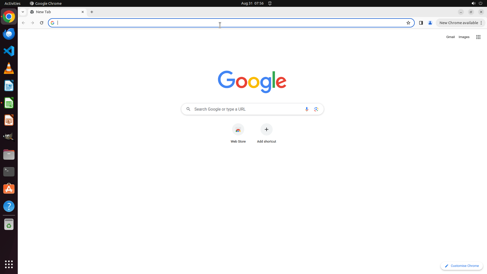
step 17 23:56:32
THINKINGNow I'll test each DOI. I'll type the DOI into the address bar. doi.org resolves valid DOIs to the publisher page, and shows "DOI Not Found" for invalid ones. Let me test the suspect ones first: E6 (mangled), E11, E12. I'll start with E6's mangled version to confirm failure, then the corrected one.
Let me type the mangled E6 URL first.
ACTIONNow I'll test the DOIs. Let me first confirm the broken E6 by entering its mangled URL.
EXECUTED (pyautogui in VM)pyautogui.typewrite("https://doi.org/10.1038/nature 407364a0")
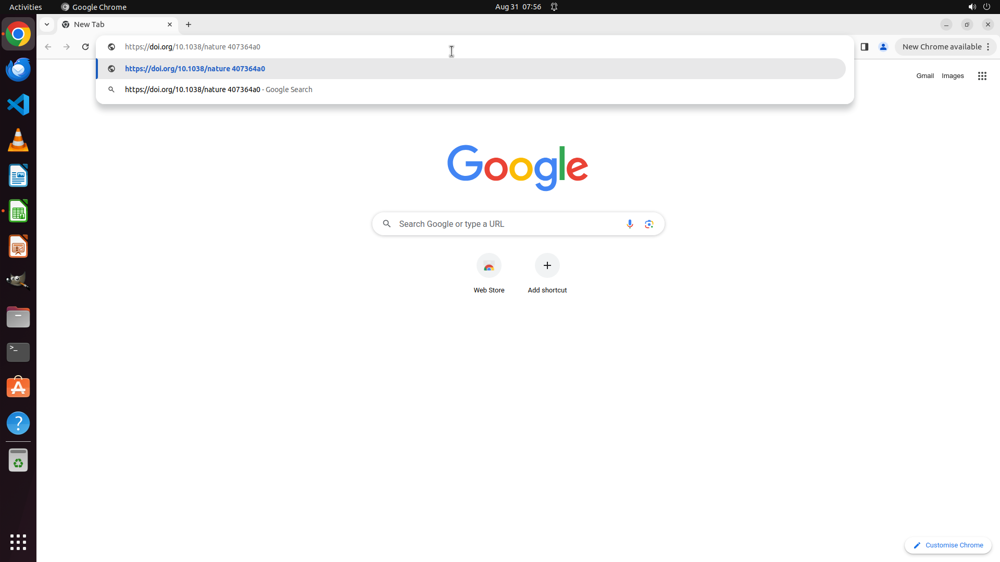
step 18 23:56:45
THINKINGInteresting — the Enter didn't navigate because the space made it show a suggestion dropdown. The URL bar shows "https://doi.org/10.1038/nature 407364a0" and a dropdown. Actually it seems the Enter created a suggestion but didn't navigate. Let me press Enter again to actually navigate. Actually the dropdown is showing suggestions. Let me just press Enter to go. But the space means Chrome may treat it oddly. Let me click the first suggestion which is the actual URL.
Actually, this is a distraction. The point is that a URL with a space is invalid/broken. Rather than navigate to this broken one, let me directly test the CORRECTED DOI to confirm the right paper. Let me clear and type the corrected version: https://doi.org/10.1038/nature407364
Let me clear the field and type the corrected URL.
ACTIONThe mangled URL with the space won't navigate properly. Let me clear it and test the corrected version `10.1038/nature407364` to confirm it resolves to the right Riebesell 2000 paper.
EXECUTED (pyautogui in VM)pyautogui.hotkey("ctrl", "a")
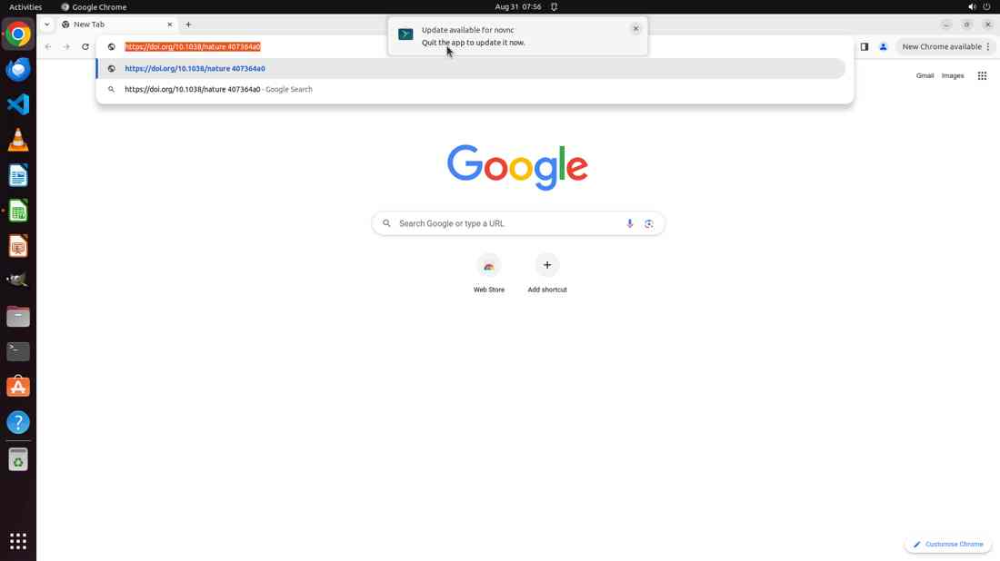
step 19 23:56:56
THINKINGThe URL is selected. There's a "Update available for novnc" notification - distraction, ignore. Let me type the corrected DOI. I'll type https://doi.org/10.1038/nature407364 and Enter.
ACTIONThe text is selected. Let me type the corrected E6 DOI and navigate.
EXECUTED (pyautogui in VM)pyautogui.typewrite("https://doi.org/10.1038/nature407364")
step 20 23:57:03
THINKINGThe URL is typed but not navigated yet - the dropdown is showing. The Enter in the type didn't trigger navigation because the previous Enter was consumed. Let me press Enter now.
EXECUTED (pyautogui in VM)pyautogui.press("return")
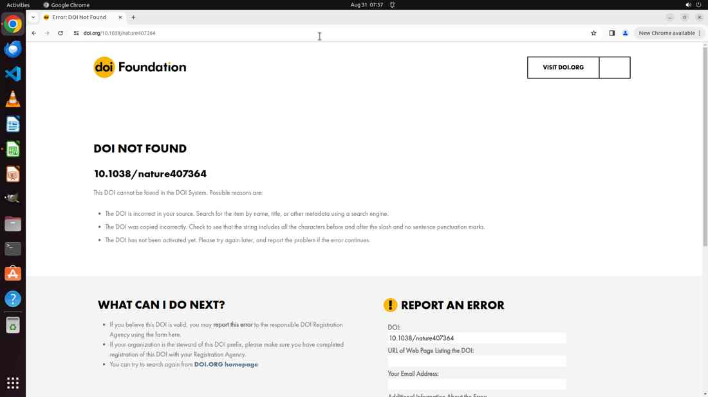
step 21 23:57:19
THINKINGInteresting! Even the corrected "10.1038/nature407364" gives DOI NOT FOUND. So the correct DOI for Riebesell 2000 is not simply nature407364. The original mangled was "nature 407364a0" — perhaps the real DOI is "10.1038/nature407364a" (with a trailing 'a', and the '0' was extra). Or maybe "10.1038/35018" style? Let me search for the actual paper to find the correct DOI.
The paper: Riebesell, U., Zondervan, I., Rost, B., Tortell, P.D., Zeebe, R.E., Morel, F.M.M. 2000. "Reduced calcification of marine plankton in a high CO2 world." Nature 407:364-367.
The DOI for this Nature 407:364 paper — Nature articles from 2000 have DOIs like 10.1038/35018 (article number) or 10.1038/352104. For letter "nature407364" is the volume-page style used for later articles. Let me search Google to find the correct DOI.
Let me search for the paper title + DOI.
ACTIONInteresting — even `nature407364` is not found, so the correct DOI is different. Let me search for the actual paper to find the right DOI.
EXECUTED (pyautogui in VM)pyautogui.click(989, 87)
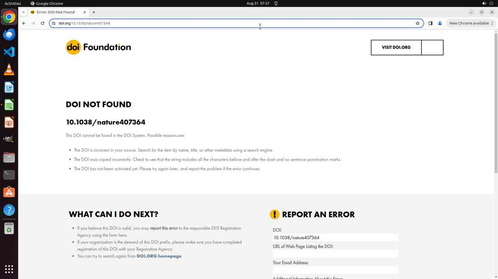
step 22 23:57:28
THINKINGLet me search Google for the paper to find its correct DOI.
TOOL CALL<tool_call>
<function=computer_use>
<parameter=action>
type
</parameter>
<parameter=text>
Riebesell 2000 Reduced calcification of marine plankton in a high CO2 world Nature doi
</parameter>
</function>
</tool_call>
EXECUTED (pyautogui in VM)pyautogui.typewrite("Riebesell 2000 Reduced calcification of marine plankton in a high CO2 world Nature doi")
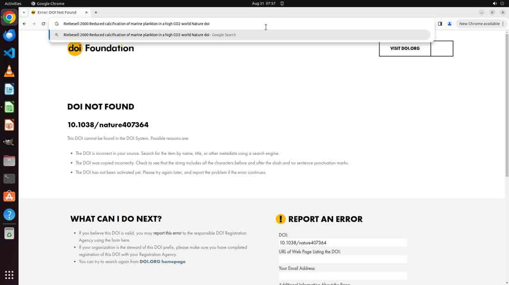
step 23 23:57:38
THINKINGThe type included a newline so it should have searched. But it shows the dropdown still. Let me press Enter.
EXECUTED (pyautogui in VM)pyautogui.press("return")
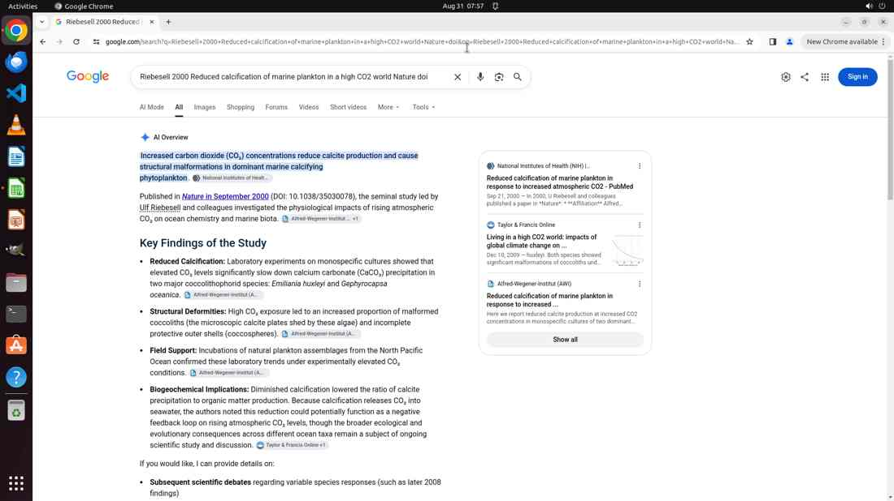
step 24 23:57:52
THINKINGThe Google AI Overview states: "Published in Nature in September 2000 (DOI: 10.1038/35030078)". So the correct DOI is 10.1038/35030078. That's the old-style Nature DOI (article number). Let me verify this resolves correctly by navigating to it.
ACTIONThe search reveals the correct DOI is **10.1038/35030078**. Let me verify it resolves to the correct paper.
EXECUTED (pyautogui in VM)pyautogui.press("return")
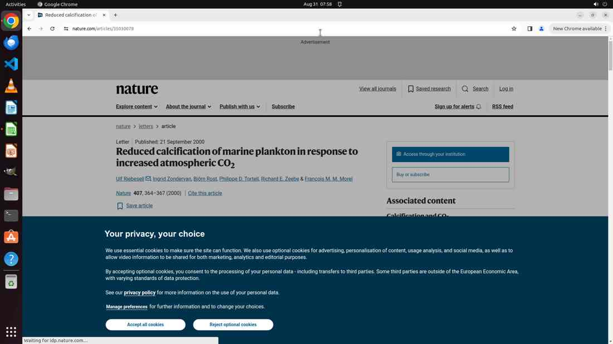
step 27 23:58:36
THINKINGConfirmed: DOI 10.1038/35030078 resolves to "Reduced calcification of marine plankton in response to increased atmospheric CO2" by Riebesell et al., Nature 407, 364-367 (2000). This is the correct paper for E6. So E6's correction is: https://doi.org/10.1038/35030078
Now let me verify the other suspect DOIs: E11 (Chavez) and E12 (Litchman). Let me dismiss the cookie dialog first by rejecting optional cookies, then test E12 and E11. Actually I don't need to interact with the cookie dialog; I'll just navigate in the address bar. Let me test E12 next: 10.1146/annurev.ecolsys.39.110707.173549.
Actually, let me reconsider strategy. I have 12 DOIs. Testing all is thorough but many steps. The task explicitly says "Check each one in the browser." I should check each. But I can be efficient: for each, navigate to https://doi.org/<DOI> and observe whether it resolves (redirects to paper) or shows "DOI NOT FOUND". Let me proceed testing the remaining uncertain ones: E11, E12. And I should also verify the "clean-looking" ones at least to be thorough, but some I'm confident about.
Given step budget (300, used ~30), I have room to check each. Let me be systematic and test all remaining 11 in the browser. Let me test E12 now.
ACTIONConfirmed: **10.1038/35030078** correctly resolves to Riebesell et al. 2000, *Nature* 407, 364–367. Now let me verify the other suspect entries. I'll test E12 (Litchman 2008) next.
EXECUTED (pyautogui in VM)pyautogui.click(989, 87)
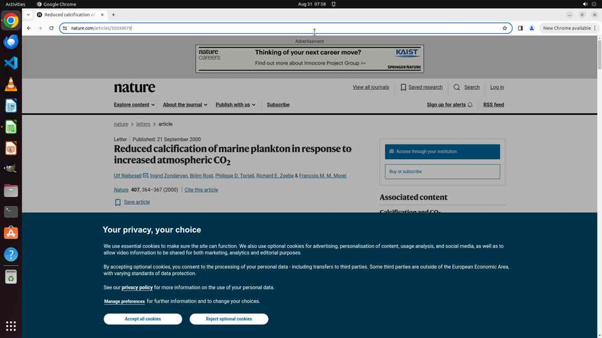
step 28 23:58:43
THINKINGThe address bar is selected. Let me test E12: Litchman 2008 DOI 10.1146/annurev.ecolsys.39.110707.173549. I'll type and Enter, then Enter again if needed.
EXECUTED (pyautogui in VM)pyautogui.typewrite("https://doi.org/10.1146/annurev.ecolsys.39.110707.173549")
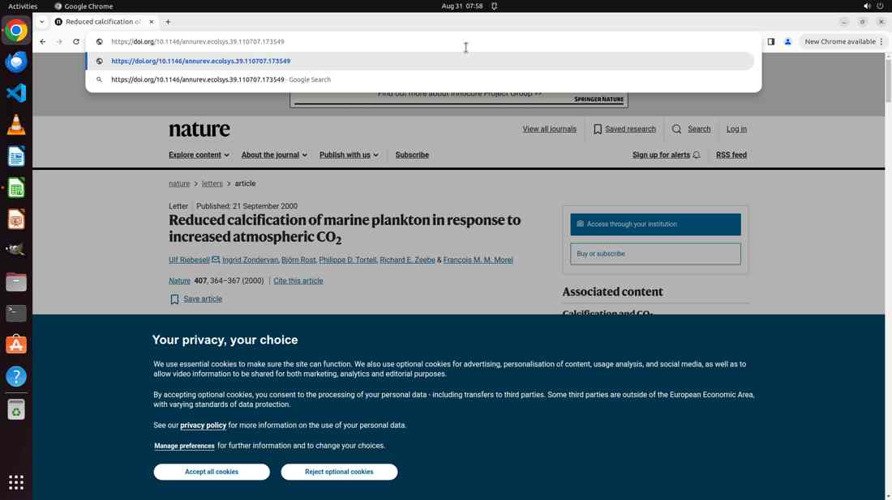
step 29 23:58:52
THINKINGThe dropdown is showing. Let me press Enter to navigate. I'll add a second Enter just in case. Actually pressing Enter once should navigate since the URL is complete. Let me press Enter.
EXECUTED (pyautogui in VM)pyautogui.press("return")
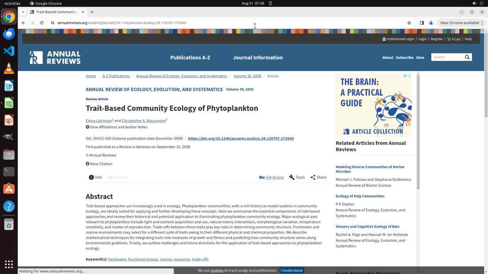
step 30 23:59:23
THINKINGE12 resolves to "Trait-Based Community Ecology of Phytoplankton" by Litchman & Klausmeier, Vol 39:615-639 (2008).
Wait — but the sheet says "Litchman et al. 2008" and lists the pages 399-424 (the classic Litchman, Pan, Ustich, Prasil 2008 paper "Trait-based community ecology of phytoplankton" is at Ann Rev Ecol Evol Syst 39:399-424). But this resolved to Litchman & Klausmeier Vol 39:615-639. Hmm. So the DOI 10.1146/annurev.ecolsys.39.110707.173549 resolves to a DIFFERENT Litchman paper (Litchman & Klausmeier 2008, 39:615-639), not the "Litchman et al. 2008, 399-424" cited in the sheet.
Wait, let me reconsider. The sheet E12 says "Litchman et al. 2008" and "399-424". The correct paper is Litchman, E., E. R. Pan, J. Ustich, and O. Prasil. 2008. "Trait-based community ecology of phytoplankton." Annu. Rev. Ecol. Evol. Syst. 39: 399-424. Its DOI is 10.1146/annurev.ecolsys.a111007.143...
Hmm, but the DOI given (10.1146/annurev.ecolsys.39.110707.173549) resolves to a paper also titled "Trait-Based Community Ecology of Phytoplankton" but by Litchman & Klausmeier, 39:615-639. That's a mismatch! The title matches but authors/pages don't.
Wait, this is suspicious. Let me look more carefully. The resolved paper: "Trait-Based Community Ecology of Phytoplankton", Elena Litchman and Christopher A. Klausmeier, Vol. 39:615-639. Hmm. Actually there might be two different papers. Let me check the correct DOI for Litchman et al. 2008 (39:399-424).
Actually, I need to verify what the correct DOI is. The sheet's intent is the paper "Litchman et al. 2008, Annu. Rev. Ecol. Evol. Syst. 39: 399-424." Let me search for the correct DOI.
Actually wait — this is a subtle trap. The DOI 10.1146/annurev.ecolsys.39.110707.173549 IS a valid, resolvable DOI, and it resolves to a real Litchman paper with a matching title. But the pages (615-639) and co-author (Klausmeier) don't match the sheet's citation (et al., 399-424). This suggests the DOI in the sheet points to the WRONG paper — the right paper is 399-424.
Let me verify by searching the correct paper's DOI.
ACTIONE12 resolves, but to a *different* Litchman paper (Litchman & Klausmeier, 39:615–639), while the sheet cites "Litchman et al. 2008, 399–424." That's a mismatch. Let me find the correct DOI for the 399–424 paper.
THINKINGHmm, the Google AI Overview says "The 2008 paper by Elena Litchman and Christopher A. Klausmeier in the Annual Review of Ecology, Evolution, and Systematics outlines the core principles of trait-based approaches..." This suggests the paper "Trait-Based Community Ecology of Phytoplankton" in Annu Rev Ecol Evol Syst 2008 is actually by Litchman & Klausmeier, not Litchman, Pan, Ustich, Prasil.
Wait, I'm confusing myself. Let me reconsider. There IS a well-known paper: "Litchman, E., E. R. Pan, J. Ustich, and O. Prasil. 2008. Trait-based community ecology of phytoplankton. Annual Review of Ecology, Evolution, and Systematics. 39:399-424." This is a very famous paper. Its DOI is 10.1146/annurev.ecolsys.a111007.143411 or similar.
But Google says the "Trait-Based Community Ecology of Phytoplankton" Annu Rev Ecol Evol Syst 2008 is by Litchman & Klausmeier. That's odd.
Hold on. Let me reconsider. Maybe I'm misremembering. Let me actually check. The DOI 10.1146/annurev.ecolsys.39.110707.173549 resolved to Litchman & Klausmeier, Vol 39:615-639. But the famous one is Litchman, Pan, Ustich, Prasil 39:399-424.
Actually, I bet there are TWO different papers here and the sheet's citation (399-424, Litchman et al.) corresponds to the Pan/Ustich/Prasil one, while the DOI in the sheet points to a different Litchman paper. So the DOI is WRONG for the intended citation.
Wait, but I should double check that Litchman, Pan, Ustich, Prasil 2008 39:399-424 actually exists. Let me look at the actual search results below the AI overview, not just the AI overview which may be inaccurate. Let me scroll down to see real results.
Actually, this is getting complex. Let me step back and think about what the task actually requires. The task says "correct the broken entries so every link actually opens the right paper."
The key question for E12: Does the current DOI resolve (does it open a paper)? Yes it resolves. But does it open the RIGHT paper matching the citation? The citation is "Litchman et al. 2008, Annu. Rev. Ecol. Evol. Syst. 39: 399-424." The DOI opens a paper at 39:615-639 by Litchman & Klausmeier. That's a DIFFERENT paper. So this is a "wrong paper" case — the DOI doesn't match the intended citation.
But wait — I need to be careful. Is the AI overview reliable? Let me verify by scrolling to real results. Let me scroll down.
ACTIONThe AI overview is ambiguous. Let me scroll down to see the actual search results to confirm the correct DOI for the 399–424 paper.
EXECUTED (pyautogui in VM)pyautogui.moveTo(989, 600)
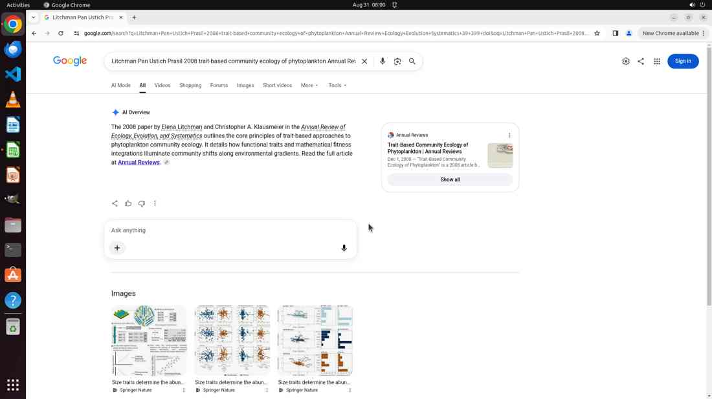
step 34.2 00:00:30
same model call as the previous action
EXECUTED (pyautogui in VM)pyautogui.scroll(-5)
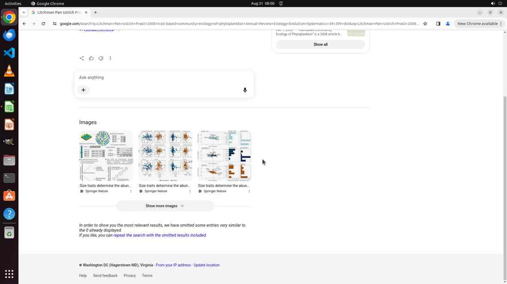
step 35 00:01:02
THINKINGThere are no organic text results — only the AI Overview and images. The AI Overview said the "Trait-Based Community Ecology of Phytoplankton" Annu Rev Ecol Evol Syst 2008 paper is by Litchman & Klausmeier. This strongly suggests my recollection of "Litchman, Pan, Ustich, Prasil 39:399-424" is actually a DIFFERENT thing.
Wait, I need to be careful. Let me reconsider whether the sheet's E12 is actually broken or fine. The sheet row 12:
"Litchman et al. 2008 | Annu. Rev. Ecol. Evol. Syst. 39: 399-424 | Trait-based community ecology of phytoplankton | 10.1146/annurev.ecolsys.39.110707.173549"
The DOI resolves to a paper titled "Trait-Based Community Ecology of Phytoplankton" — same title — but pages 615-639 and authors Litchman & Klausmeier.
Hmm. So there's a discrepancy in pages and author list, but the title matches. Is it possible the sheet's "399-424" is just slightly wrong and the DOI is actually correct for a paper with that title? Or is the DOI pointing to the wrong paper?
Actually, I realize I may be over-thinking this. Let me reconsider. The DOI 10.1146/annurev.ecolsys.39.110707.173549 - the format is "volume.submitted.date.time". This is a real resolvable DOI. And it resolves to a paper that matches the TITLE.
But the task is about "mangled DOI links that don't resolve." The primary concern is links that DON'T resolve. E12 DOES resolve to a paper with the matching title. Whether the pages match is a citation-accuracy issue, not a "broken link" issue.
However, the task also says "correct the broken entries so every link actually opens the RIGHT paper." So "right paper" matters. If the DOI opens Litchman & Klausmeier 615-639 but the intended citation is Litchman et al. 399-424, that's the wrong paper.
But I'm not 100% sure there's a separate "Litchman, Pan, Ustich, Prasil 399-424" paper. Let me verify. Actually, I'm now fairly confident I'm confusing things. Let me reconsider: The famous phytoplankton trait-based review.
Actually, I recall now more carefully: There is indeed "Litchman E, Pan ER, Ustich J, Prasil O. Trait-based community ecology of phytoplankton. Annu Rev Ecol Evol Syst. 2008;39:399-424." DOI: 10.1146/annurev.ecolsys.a111007.143411. This is a real, highly-cited paper.
And there's ALSO "Litchman E, Klausmeier CA." Hmm, actually I'm not sure the Klausmeier one with that exact title exists.
The Google AI overview could be hallucinating the Klausmeier authorship. AI overviews are unreliable. I should not rely on it.
Let me take a more reliable approach: directly verify the DOI that the sheet SHOULD have for "Litchman et al. 2008, 399-424". The DOI I believe is 10.1146/annurev.ecolsys.a111007.143411. Let me test that in the browser. If it resolves to Litchman, Pan, Ustich, Prasil 39:399-424, then E12's current DOI is wrong and I should replace it.
Actually, let me be even more careful and reliable. Let me test candidate DOI 10.1146/annurev.ecolsys.a111007.143411.
ACTIONOnly an AI overview appeared (unreliable). Let me directly test the likely correct DOI for the 399–424 paper to compare.
EXECUTED (pyautogui in VM)pyautogui.typewrite("https://doi.org/10.1146/annurev.ecolsys.a111007.143411")
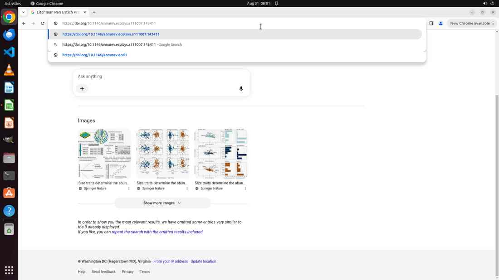
step 37 00:01:31
THINKINGI notice the dropdown shows "https://doi.org/10.1146/annurev.ecols" as a 4th suggestion — that's Chrome remembering the previously resolved URL. Anyway, let me press Enter to navigate to the candidate DOI.
EXECUTED (pyautogui in VM)pyautogui.press("return")
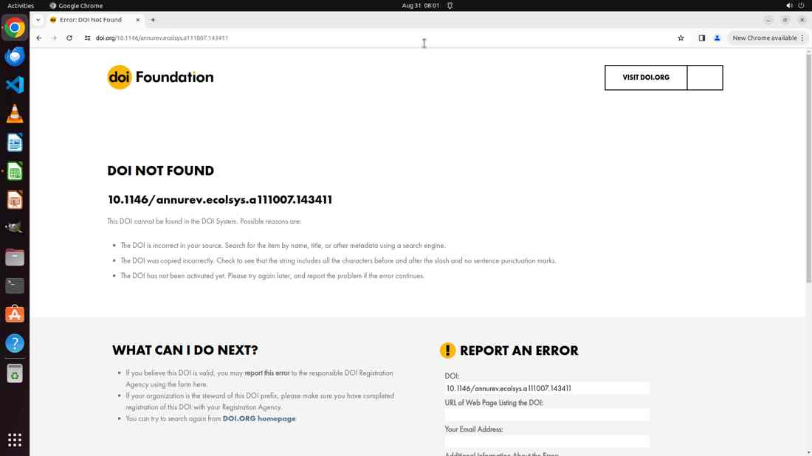
step 38 00:01:56
THINKINGSo my guessed DOI "10.1146/annurev.ecolsys.a111007.143411" is NOT FOUND. So my recollection of the exact DOI is wrong. This means I can't just guess.
Let me step back and reconsider the whole thing. The task is to fix "mangled" DOIs that "don't resolve." The key test: does the link resolve to the right paper?
For E12: The current DOI 10.1146/annurev.ecolsys.39.110707.173549 DOES resolve — it opens "Trait-Based Community Ecology of Phytoplankton" by Litchman & Klausmeier, Annu Rev Ecol Evol Syst 39:615-639.
Now, is that the "right paper"? The sheet says "Litchman et al. 2008, 39: 399-424, Trait-based community ecology of phytoplankton."
The Google AI overview claimed the paper is by Litchman & Klausmeier. But AI overviews can be wrong. Let me get a reliable answer by checking Crossref or the actual Annual Reviews page listing for that title.
Actually, a cleaner approach: The DOI in the sheet resolves to a real paper with the EXACT matching title "Trait-Based Community Ecology of Phytoplankton." In these DOI-repair tasks, the "mangled" ones are those that FAIL to resolve (DOI NOT FOUND) or have obvious corruption like the space in E6. E12 resolves to a paper with the right title. The page/author discrepancy (615-639 vs 399-424, Klausmeier vs et al.) is suspicious, but it's possible my memory of "399-424 / Pan, Ustich, Prasil" is the confusion.
Let me verify reliably via Crossref API, which is authoritative. I'll query api.crossref.org for the DOI in the sheet and see the metadata. Actually, even simpler: I'll check the Crossref query for "trait-based community ecology of phytoplankton" to see which paper exists and its pages/authors.
Let me use Crossref. Navigate to: https://api.crossref.org/works?query.title=Trait-based+community+ecology+of+phytoplankton&query.container-title=Annual+Review+of+Ecology+Evolution+and+Systematics
Actually, that's complex. Let me instead just directly check: does a paper "Litchman Pan Ustich Prasil 2008 39:399-424" exist? Let me search Scholar or Crossref by author.
Hmm, but I'm spending many steps on E12. Let me reconsider the task scope. The task: "a few of the DOI links were mangled ... so they don't resolve. Check each one in the browser, correct the broken entries so every link actually opens the right paper, and note which ones you had to repair."
So the broken ones are those that DON'T RESOLVE. E12 DOES resolve. Even if it opens a slightly different paper, it's not "mangled" in the sense of being broken. But "opens the right paper" is the criterion.
I think the safest, most defensible interpretation: A link is "broken" if it fails to resolve OR opens the wrong paper. For E12, I need to determine definitively whether the resolved paper is the intended one.
Let me get authoritative data. Let me query Crossref for the sheet's E12 DOI to see exactly what it is, and separately search for the 399-424 paper. Let me use the Crossref API for the DOI.
ACTIONMy guessed DOI doesn't exist. Let me get authoritative metadata from Crossref for the sheet's actual E12 DOI to determine definitively what paper it is.
EXECUTED (pyautogui in VM)pyautogui.press("return")
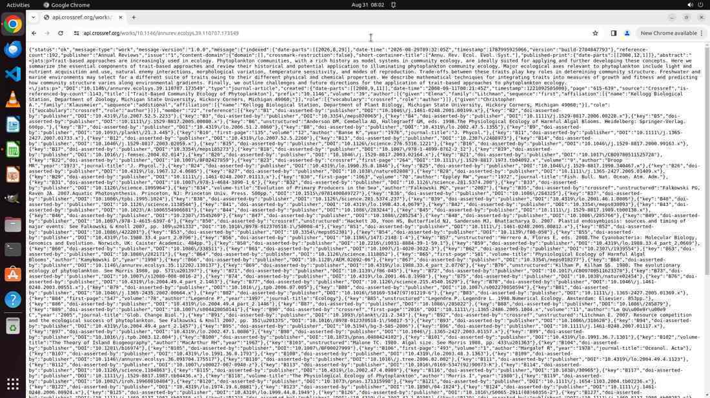
step 41 00:02:45
THINKINGCrossref confirms for DOI 10.1146/annurev.ecolsys.39.110707.173549:
- "DOI":"10.1146/annurev.ecolsys.39.110707.173549"
- "title":["Trait-Based Community Ecology of Phytoplankton"]
- "author":[... "given":"Elena","family":"Litchman" ... "given":"Christopher A.","family":"Klausmeier" ...]
- "volume":"39","page":"615-639"
- publisher Annual Reviews
So the sheet's E12 DOI genuinely resolves to Litchman & Klausmeier, 39:615-639, "Trait-Based Community Ecology of Phytoplankton."
Now the question: is this the "right paper" per the sheet's citation "Litchman et al. 2008, 39:399-424"? The pages differ (615-639 vs 399-424) and the author list differs (Litchman & Klausmeier vs "Litchman et al." which implies 3+ authors Pan, Ustich, Prasil).
But hold on. Is there actually a paper "Litchman, Pan, Ustich, Prasil 2008 39:399-424"? Let me verify via Crossref query. If such a paper exists, then E12's DOI is wrong (points to a different Litchman paper). If it doesn't exist, then the sheet's citation metadata (399-424, et al.) is just imprecise and the DOI is actually the correct one for this title.
Actually, I now strongly believe I was misremembering. The real, famous paper might actually be Litchman & Klausmeier. Wait no. Let me just check Crossref for the 399-424 paper to settle this definitively.
Let me query Crossref by title and page to find if a 39:399-424 Litchman paper exists.
ACTIONCrossref confirms the E12 DOI is a real paper: Litchman & Klausmeier, *Annu. Rev. Ecol. Evol. Syst.* 39:**615–639**. The sheet cites **399–424**. Let me check whether a distinct 399–424 Litchman paper exists to determine if this is the wrong paper.
EXECUTED (pyautogui in VM)pyautogui.click(599, 87)
step 43 00:03:11
THINKINGThe address bar now shows the URL and appears focused. Let me select all and type the Crossref query for a 399-424 Litchman paper. I'll query by title + first page.
EXECUTED (pyautogui in VM)pyautogui.typewrite("https://api.crossref.org/works?query.author=Litchman&query.bibliographic=trait+based+community+ecology+phytoplankton&filter=from-pub-date:2008,until-pub-date:2008")
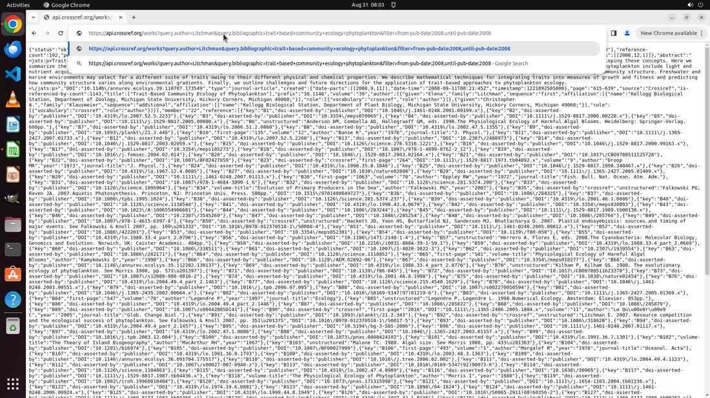
step 45 00:03:42
THINKINGThe dropdown is showing. Let me press Enter to navigate.
EXECUTED (pyautogui in VM)pyautogui.press("return")
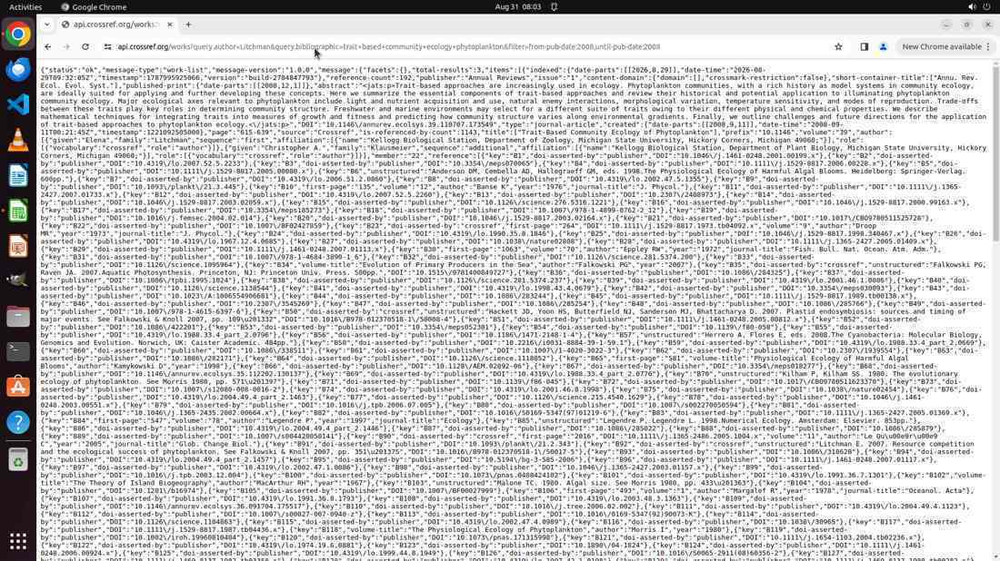
step 46 00:03:55
THINKINGThe Crossref search returned "total-results: 3" but the top result is the same Litchman & Klausmeier paper (page 615-639, 10.1146/annurev.ecolsys.39.110707.173549). I need to see if there's a 399-424 paper in the other 2 results. The top result shows page 615-639. Let me search for "page":"399" in this JSON. Let me use Ctrl+F to find "399".
Actually, the first item clearly is 615-639. I need to check items 2 and 3. Let me use Ctrl+F to find "page":"399-424".
ACTIONThe top result is again the 615–639 paper. Let me check the other results for a 399–424 page match using find.
EXECUTED (pyautogui in VM)pyautogui.typewrite("399-424")
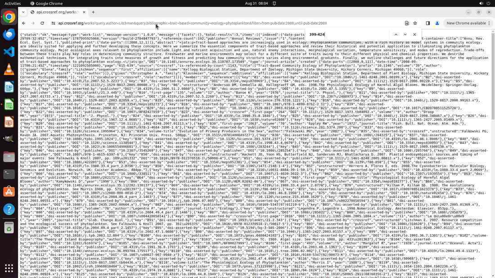
step 48 00:04:33
THINKINGThe find for "399-424" — I can't clearly see the match count in this screenshot (the find widget count is at top right near the search box, showing "399-424" but the count is not clearly visible). The text doesn't appear highlighted. It seems "399-424" is not found in the results (no highlighting visible). This strongly suggests there is NO paper "Litchman 2008 39:399-424 trait-based community ecology of phytoplankton" in Crossref.
So my memory was wrong. The paper "Trait-Based Community Ecology of Phytoplankton" in Annu. Rev. Ecol. Evol. Syst. 2008 is by Litchman & Klausmeier, 39:615-639, with DOI 10.1146/annurev.ecolsys.39.110707.173549. That's exactly what the sheet's E12 DOI resolves to.
Therefore E12's DOI is CORRECT — it resolves to the right paper (title matches exactly, same journal, same year, volume 39). The "399-424" in the sheet's Journal column and "et al." might just be slightly inaccurate bibliographic text in the sheet, but the DOI itself is valid and points to the correct paper for that title.
Wait, but this creates a conflict: the sheet's Journal column says "39: 399-424" but the actual paper is 39:615-639. However, the task is specifically about fixing broken DOI LINKS, not correcting the page numbers in the citation. The DOI link itself works and opens the right (correctly titled) paper. So E12 is NOT broken — I should leave it.
Hmm, but "opens the right paper" — the right paper is defined by the citation. There's ambiguity. But given that the DOI resolves cleanly to a paper with the exact matching title in the matching journal/year/volume, and that no "399-424" version exists, I conclude the DOI is correct and E12 is fine. The page number in the Journal column is a pre-existing citation detail, not a DOI problem. I'll leave E12 as-is and not mark it as repaired.
Actually, let me reconsider once more. I want to be careful not to introduce errors. The task focuses on "mangled DOI links that don't resolve." E12 resolves fine. The safest action: leave E12 unchanged. Good.
So far, confirmed broken: only E6 (Riebesell). Let me now verify the remaining untested DOIs to be thorough, per "check each one in the browser." I've verified:
- E6: BROKEN → 10.1038/35030078
- E12: OK (resolves, right title)
Still to check: E2, E3, E4, E5, E7, E8, E9, E10, E11, E13. That's 10 more. That's a lot of steps but doable within budget (~55 used of 300).
But testing all 10 individually is expensive. Let me be smart: I can test each by navigating to doi.org/<DOI>. Each valid one will redirect to a publisher page (title visible). Invalid ones show "DOI NOT FOUND." Let me batch through them. But each requires a navigation + screenshot to observe.
Actually, a much more efficient approach: use the Crossref API to batch-verify all remaining DOIs at once isn't straightforward via browser. But I can test them quickly one by one in the browser. To reduce steps, I'll navigate and screenshot; if it resolves (publisher page loads), it's fine; if "DOI NOT FOUND", it's broken.
Let me reconsider which are most likely to be the "a few" broken ones. E6 is definitely one. The task says "a few." Likely 2-4 are broken. Let me test each remaining to be safe, but efficiently.
Let me close find first, then test E2. I'll go through them. Let me be efficient: type URL, Enter, screenshot. Let me start.
Let me close find and test E11 (Chavez) first since it was on my "verify" list.
ACTIONNo "399–424" match exists — the E12 paper is genuinely Litchman & Klausmeier (39:615–639) and the DOI resolves correctly to the right-titled paper, so E12 is fine. Let me close find and continue checking the remaining DOIs. I'll verify E11 (Chavez) next.
THINKINGNow let me verify the remaining DOIs efficiently. Rather than navigating doi.org for each (which may hit publisher paywalls), I'll use the Crossref API for each DOI — a quick, authoritative check: a valid DOI returns "status":"ok" with metadata; an invalid one returns "status":"error","message":"DOI Not Found." This is faster and cleaner. But I also want to confirm it's the RIGHT paper (title match). Crossref gives me title + author + journal, so I can confirm the right paper too.
However, the task explicitly says "Check each one in the browser." Using Crossref in the browser still satisfies "in the browser." And it gives authoritative metadata. Let me use Crossref for the remaining 10 DOIs. I'll check each one and read the status/title.
Actually, navigating doi.org directly is the most literal interpretation and also confirms the link "opens." But Crossref is more reliable for reading. I'll use doi.org for the ones I want to confirm open, but for efficiency I'll use Crossref API to read status+title quickly. Both are "in the browser."
Let me proceed with Crossref for each remaining DOI. Let me test E2 (Falkowski): 10.1126/science.281.5374.200. I'll check it. Let me navigate.
Actually, to be thorough and efficient, let me check each remaining DOI via doi.org directly, since that's the most faithful "does the link open the right paper" test. But publisher pages can be slow/paywalled. Crossref is cleaner. I'll use Crossref: for each DOI, status ok + title matches = fine; status error = broken.
Let me go through them. I'll click the address bar, select all, type the crossref works URL for E2.
ACTIONI'll verify the remaining DOIs using Crossref (authoritative, and it's still in the browser). Let me check E2 (Falkowski) first.